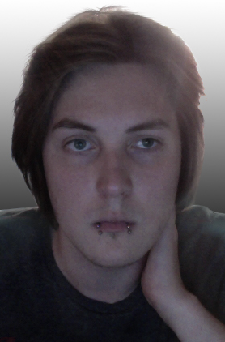

Om Lowe Raivio, vem är han?
Introduktion
Vem är Lowe?
Jag heter Lowe Raivio och är en kille från året 1994. Jag gillar inte att vänta och är bekvämast när jag sitter ner, helst framför datorn eller tvn. Jag tycker inte så mycket om (men uppskattar att det finns); varmt väder, offentliga toaletter(att använda), fågelsång på morgonen, stava och när saker inte går som det ska.
Anledningen till att jag uppskattar (men ändå inte älskar) saker som inte fungerar som dem ska är för att då får jag chans att laga dem, och det är så jag lär mig saker vilket som leder oss till vad jag gillar att göra. Jag gillar att lära mig nya saker, spela spel, diskutera, mat och självklart datorn.
Lowe som person
Det är lätt att försöka avgöra vem en person är genom att bara rada upp saker personen gillar eller inte gillar. Men som alla vet så är en person så mycket mer än så. Saker som definerar en person kan vara dennes inställning till saker, dennes syn på livet, om man är skeptisk, tidsoptimist eller envis, nu råkar det vara så att jag är både skeptiskt och envis men inte tidsoptimist, snarare motsatsen.
När det gäller syn på livet och inställning till nya saker så är jag väldigt öppen, jag tycker "typ" att alla ska få göra vad de vill och jag testar gärna nya saker, nu kan ju du som läser välja att övertolka "att alla får göra vad de vill" och tänka så långt att du tror att jag tycker att människor har rätt att skada andra människor, och jag vill poängtera att jag inte tycker det.
Jag har en tumregel om det inte skadar dig så pass att du behöver sjukvård och ingen annan så borde du få göra det. Som du märker så ordbajsar jag nästan, skriver allt som dyker upp i huvudet som jag tror kan på något sätt berätta vem jag är. Kort och gott så jag bara en människa med dessa tankar och jag tror att det är vad som definerar mig bäst.
Bakgrund
Uppväxt
Jag växte upp i ett rött hus med vita knutar i skogen, ja verkligen skogen. I år får vi äntligen fiber på landet där jag växte upp, det borde ge dig en bild på hur pass mycket jag faktiskt bodde på landet. Det var inte förrän runt 2007 eller 2006 som vi fick bredband och då var jag runt 12 eller 13 år, jag minns det eftersom det var strax efter det som jag började spela World Of Warcraft. Om du spelade WoW under den perioden som jag spelade så tyckte du säkert att det var jobbigt med alla 13 åringar som gick omkring och tiggde guld, just precis jag var än av dem men jag fastnade aldrig riktigt i spelet utan höll väl på några månader.
På min fritid, under den större delen av min uppväxt, höll jag mig till tvspel och dataspel. Idag spelar jag fortfarande rätt mycket men är mer intresserad av att göra egna saker, saker som spel, program, moddar etc.. Hittils så har jag inte gjort något eget utan lagt fokusen på skolan och lära mig. Jag ser att jag har skrivit en hel del och jag ska försöka avrunda. Det sista jag ville lägga till är att vid åldern 13 så fick jag upp ett intresse för skräckfilmer, jag gick ett gymnasie med fokus på film och tanken var att jag skulle göra skräckfilmer. Någongång i mitten av gymnasietiden så släppte jag skräckfilmer och därav också tanken om att hålla på med film. Idag läser jag Creepypasta när jag vill bli uppskrämd istället
Familj
Min familj består av pappa, mamma, bror, syster och så jag. När jag började gymnasiet flyttade jag till Norrköping och numera träffar jag bara min familj de få helger som jag orkar ta mig hem, men jag är ivrig att "börja vuxenlivet" så att bo själv känns inte helt fel. Jag är inte helt själv, jag har en flickvän också, nu i december (2013) så kommer vi ha varit ihop i 5 år, så man kan kort och gott säga att vi är väldigt tajta.
Min pappa har ett eget företag där han säljer och bygger friformspooler, om du är nyfiken så kan du söka upp Aqvis swimmingpool. Mamma jobbar med pappa i företaget men utöver det är intresserad av foto. Min storebror som är pluggar musik och ska börja en musikskola i tyskland. Sen har jag min lillasyster som går andra året på gymnasiet i en bild och form utbildning
Framtiden
I framtiden så vill jag bygga webbapplikationer (som jag har fått lära mig att det heter), även telefonappar och spel står på min "att göra innan jag dör"-lista.
Intressen
Dator
Dator är ett av mina största intressen, det spelar ingen roll vad det är så länge det handlar om datorer så är jag intresserad. Jag kanske inte kan så mycket om hårdvara, men det är vid datorn jag känner mig hemma.
Jag använder datorn till allt möjligt, liksom de flesta andra. Det var ett tag sedan jag verkligen spelade spel, men det är fortfarande något jag gör någon gång i veckan. Men för mig handlar inte spel bara om att spela den, jag samlar på dem. Jag äger ungefär 100titlar på steam och jag har inte riktigt haft tid att ens testa alla (vissa har jag köpt i "paket" med fler spel, så det är därför..), men även om jag inte spelar spelen nu så planerar jag att någon gång ska jag i alla fall testa alla mina spel.(hehe)
Film
Film har alltid vart mitt andra stora intresse, och inte vilken film som helst utan skräckfilm. Allt började en fredagskväll under december, året som jag fyllt 13, den rätt nylanserade tvkaneln tv6 visade skräckfilmer och jag som tidigare inte hade gillat skräckfilmer satt nu fastnitat (inte bokstavligen) vid tvn och kollade på fredag den 13:de del 6 Jason lives. Det var det läskigaste jag hade sett, eller det läskigaste jag hade sett som jag klarade av att se. Efter den kvällen började jag försöka få tag på de andra filmerna i friday the 13th serien och det var så min skräckfilmsperiod började.
När min skräckfilms period hade vart igång ett tag så började jag intressera mig mer av hur och varför saker var läskigt, detta utvecklades snart till att jag började klura på hur man tog fram andra känslor än skräck inom på film. Nu tror jag det får vara nog med text, jag listade upp några filmer och serier jag jag gillar, några jag sett som IMDB hade betygsatt högt.
Filmer jag gillar
- Skräckfilmer
- Butterfly Effect
- John Dies at the End
- Insidious
- Timecrimes
- 13: Game of Death
- Andra filmer
- There Will Be Blood
- Memento
- Battle Royale
- Bang Bang You're Dead
- eXistenZ
- Serier
- Breaking Bad
- Wilfred
- Twin Peaks
- Dexter
- Death Note
- Top 5 filmer enligt IMDB (som jag sett)
-
- Fight Club
- IMDB Poäng: 8,9/10
- Seven
- IMDB Poäng: 8,7/10
- När lammen tystnar
- IMDB Poäng: 8,7/10
- Jakten på den försvunna skatten
- IMDB Poäng: 8,6/10
- The Pianist
- IMDB Poäng: 8,5/10
- Fight Club